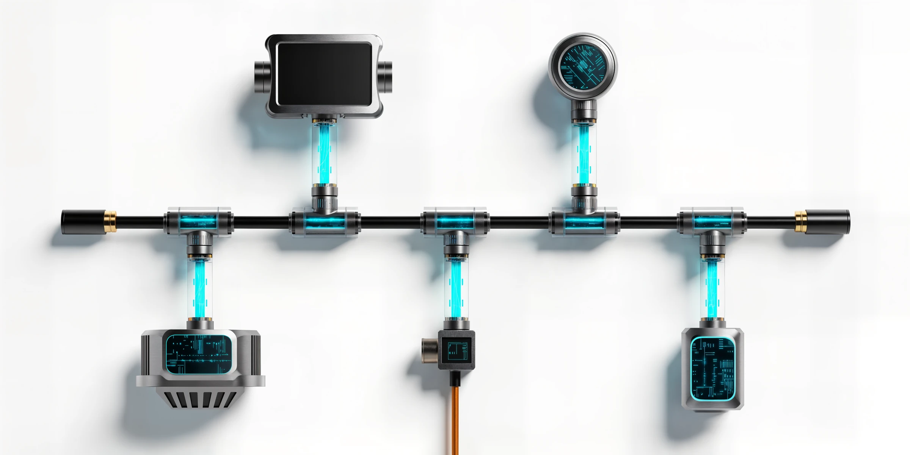
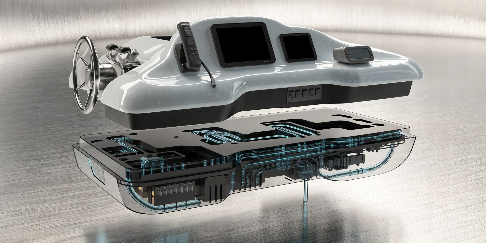
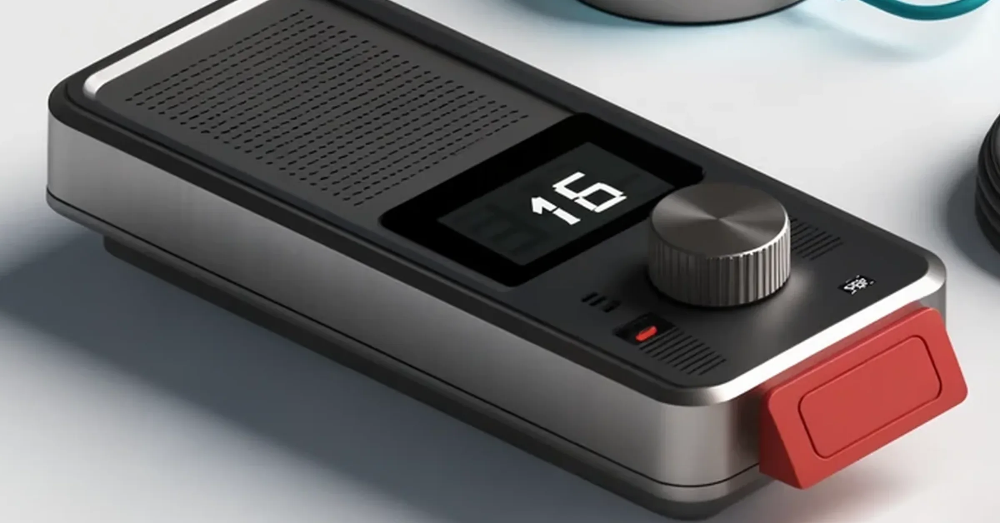

SYSTEM / 01
NMEA Networks
Power, termination, topology and device traffic handled as one network.

Mobile service · Upper Florida Keys
NMEA networks. Marine electronics installation. Marine radio service and FCC ship-radio inspections.
Explore the three specialtiesZenith systems console
The offer is simple. Select a specialty, see the system, then open its dedicated service page.
SYSTEM / 01
Power, termination, topology and device traffic handled as one network.

SYSTEM / 02
Clean at the helm. Protected, serviceable and tested behind the panel.

SYSTEM / 03
VHF, DSC, AIS and the RF path—plus ship-radio inspections for covered vessels.

FCC-licensed GROL technician
One disciplined route
Understand the boat, symptom, equipment and full signal path.
Test power, network, configuration and RF conditions before blaming parts.
Repair the actual fault or build the installation around the vessel.
Commission the finished system and prove the requested functions.
Qualified across the signal path

Key Largo · Tavernier · Islamorada
Text the boat location, equipment, symptoms and clear photos. The person who answers is the person who works on the boat.